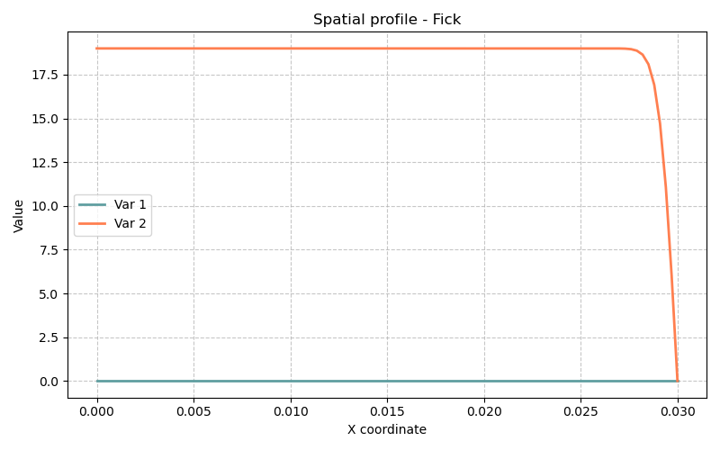

19 Modèle Fick — Seconde loi de Fick (Diffusion de soluté)
Fichiers sources :
src/Models/ModelFiles/Fick.c·test_examples/Fick/Fick
19.1 Table des matières
- Contexte et objectif
- Hypothèses
- Variables et Modèle mathématique
- Explication des fichiers d’entrée
- Résultats escomptés
- Références bibliographiques
19.2 1. Contexte et objectif
Le modèle Fick simule la diffusion “pure” d’un soluté (typiquement des ions alcalins comme le Sodium \(Na^+\) ou Potassium \(K^+\)) dissout au sein d’un milieu poreux inerte et saturé d’eau. Il s’appuie sur la Seconde loi de Fick, qui décrit comment un champ de concentration matérielle fluctue au fil du temps sous la stricte influence de ses propres gradients. Il n’y a pas de mouvement macroscopique du fluide porteur (ni convection, ni advection).
L’exemple test_examples/Fick/Fick est une démonstration mono-dimensionnelle (1 Axis) de la lixiviation d’un bloc de matériau (un barreau de 3 cm). Il s’agirait d’une épruvette saturée en sel (concentration uniforme initiale) dont une extrémité est brutalement “nettoyée” au contact d’eau pure, entraînant une désorption/diffusion de l’intérieur vers l’extérieur. L’historique en est tracé sur une année complète (31 536 000 secondes).
19.3 2. Hypothèses
- Calcul en Volumes Finis (FVM) : Contrairement aux modèles structurels comme Elast résolus par Éléments Finis, ce modèle emploie l’architecture FVM (
#include "FVM.h") codée dans Bil. Cette formulation intègre des flux aux frontières, garantissant de fait la stricte conservation des moles chimiques d’une cellule à l’autre. - Diffusion sans convection : La vélocité de l’eau interstitielle est parfaitement nulle. Le profil évolue comme un étalement gaussien ou en fonction d’erreur d’une onde chimique vers sa limite.
- Tortuosité du milieu poreux : La géométrie intrique l’acheminement des molécules. Le coefficient de transfert prend en compte la tortuosité liquide (ex:
TortuosityOhJang) qui dépend intimement de la seule variable physique d’entrée : laporosity\(\phi\).
19.4 3. Variables et Modèle mathématique
19.4.1 Inconnues
| Symbole | Signification |
|---|---|
| \(c_{\text{na}}\) | Molarité ou concentration primaire en Soluté (inconnue d’état) |
19.4.2 Conservation de la masse
L’équation nodale traitée nommée implicitement solute stipule un équilibre des masses molaires de Na. Son implémentation suit le schéma temporel classique : \[ \frac{\partial c_{\text{na}}}{\partial t} \phi + \nabla \cdot \mathbf{w}_{\text{na}} = 0 \] Où l’implantation FVM bilantielle discrète est : (N_solute - N_soluten) + dt * div(W_solute) = 0
19.4.3 Flux de Fick (Loi de comportement)
La relation régissant le vecteur d’échange entre cellules : \[ \mathbf{w}_{\text{na}} = - D_{\text{eff}} \nabla c_{\text{na}} - \dots \] Avec un coefficient de transfert effectif calculé dans le code via : \(D_{\text{eff}} = D_{\text{eau}} \cdot \tau(\phi)\) où \(\tau\) est la tortuosité, et \(D_{\text{eau}}\) la diffusivité du \(Na^+\) dans de l’eau à \(298^\circ K\).
19.5 4. Explication des fichiers d’entrée (Fick)
L’expérience cible une simplicité maximale au travers d’algorithmes et d’une syntaxe minimaliste :
Geometry & Mesh
Geometry 1 AxisLe système bascule en unidimensionnel le long de l’axe central. Le maillage n’utilise pas de surface
.mshdegmshmais est généré internalement par des paramètres numériques (un segment continu aboutissant à 3 cm de longueur,3.e-2segmenté en sous-cellules de longueur \(3\cdot 10^{-4}\) mètres, soit 100 mailles alignées).Matériau
Material Model = Fick porosity = 0.379Un unique tenseur macroscopique, paramétré par une belle porosité de \(\approx 38 \%\). La diffusivité de l’ion dans l’eau n’est pas spécifiée, le code injecte sa constante préprogrammée (
DiffusionCoefficientOfMoleculeInWater(Na)).Gradients originels et Conditions aux limites
Fields 1 Value = 19. Initialization 1 Region = 1 Unknown = c_na Field = 1Par le processus d’initialisation, la Totalité du domaine poreux (Region 1) se voit administrer une valeur saturante initiale de \(19\) mol pour le champ primaire \(c_{na}\).
Functions 1 N = 2 F(0) = 1. F(3600) = 0. Boundary Conditions 1 Reg = 2 Unknown = c_na Field = 1 Function = 1Le point de bord (Reg 2 - vraisemblablement la face externe) est maintenu chimiquement. Via la
Function, ce noeud valait \(19 \times 1\) au temps absolu \(t=0\), puis décline drastiquement pour atteindre un grand \(0\) absolu au bout d’une heure (3600 sec), qu’elle maintient ad vitam. Cela représente le rinçage complet par trempage extérieur du bloc.Solveur
Dates 4 0 86400 259200 31536000La simulation extrait précisément les valeurs à \(t=0\), au bout de 1 jour (86400s), 3 jours, et 1 an (31 536 000s).
Iterative Processtourne via un Newton borné à 20 itérations.
19.6 5. Résultats escomptés
Cette expérience de dessalement 1D, visualisable après calcul par les fichiers .t1 à .t3 illuste une diffusion par épuisement : - Le profil temporel révèlera la perte progressive des sels le long du barreau. - À 1 jour (.t1), la face \(x=0\) en contact vaudra 0, tandis que l’autre bout de l’échantillon à \(x=3\) cm pourrait encore arborer son plateau de rétention natif à 19 moles, la vague chimique n’ayant pas atteint la profondeur limite due à la grande tortuosité du béton/roche. - À l’issue d’une année (.t3), la concentration devrait avoisiner des reliquats asymptotiques à presque 0 le long de tous les noeuds axiaux, l’intégralité du Sodium ou Potassium ayant fui par gradient entropique dans l’eau de lavage infinie de la condition de frontière (Reg 2).

19.7 6. Références bibliographiques
- Dangla, P. — Bil : a FEM/FVM platform for multiphysics simulations.
- Base physique de la tortuosité des pores capillaires (Lois de Oh & Jang, 2004 ou de Bažant & Najjar, 1972 implémentées dans le préprocesseur bil pour retarder le flux).
- Loi de Fick — Formulation fondamentale phéno-macroscopique du transport de matière par diffusion.